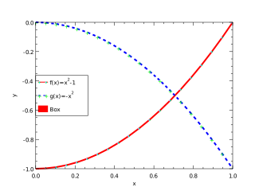
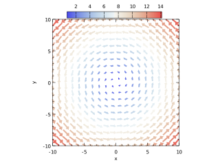

Procedures
| Procedure | Location | Procedure Type | Description |
|---|---|---|---|
| abs_t | treeOperator_mod | Interface | |
| acos_t | treeTrigonometric_mod | Interface | |
| add_t | treeOperator_mod | Interface | |
| arg | kinds_mod | Function | Compute the argument of a complex number |
| arrayToChar | text_mod | Function | Convert an array of character(1) into a character |
| asin_t | treeTrigonometric_mod | Interface | |
| assignment(=) | autoDiff_mod | Interface | |
| atan_t | treeTrigonometric_mod | Interface | |
| bar | plplotlib_mod | Subroutine | Create a bar graph |
| barh | plplotlib_mod | Subroutine | Create a horizontal bar graph |
| biCGSTAB_t | solvers_mod | Interface | |
| biConjugateGradientStabilized | basicSolvers_mod | Function | |
| binData | plplotlib_mod | Function | Count data in each bin |
| box | plplotlib_mod | Subroutine | Set x,y and plot labels |
| charToArray | text_mod | Function | Convert a character into an array of character(1) |
| checkPrecision | testKinds_prg | Function | Compare a real value with its true value in string form; return the correct digit count |
| colorbar | plplotlib_mod | Subroutine | Add a colorbar to the top of the plot |
| colorbar2 | plplotlib_mod | Subroutine | Add a colorbar to the top of the plot |
| colorize | text_mod | Function | Bracket a string with text to change its color on a terminal |
| colorMap | text_mod | Function | Return the color code for colorize based on the coolwarm color map |
| config_t | config_mod | Interface | Constructor for config_t |
| conjg | quaternion_mod | Interface | |
| conjugateGradient | basicSolvers_mod | Function | |
| conjugateGradient_t | solvers_mod | Interface | |
| contour | plplotlib_mod | Subroutine | Plot contour lines |
| contourf | plplotlib_mod | Subroutine | Plot filled contours |
| cos | autoDiff_mod | Interface | |
| cos_t | treeTrigonometric_mod | Interface | |
| cpuTime | time_mod | Function | Return the cpu time to within an added constant (excludes sleep time) |
| cubicSpline_t | spline_mod | Interface | Constructor for cubicSpline_t |
| deDup | array_mod | Function | Remove duplicates from a list of positive integers |
| der | autoDiff_mod | Interface | |
| DFT | fourier_mod | Interface | Compute the DFT of a dataset |
| diff1 | autoDiff_mod | Interface | |
| diff3 | autoDiff_mod | Interface | |
| div_t | treeOperator_mod | Interface | |
| doBar | examples_prg | Subroutine |
|
| doContour | examples_prg | Subroutine |
|
| doError | examples_prg | Subroutine |
|
| doFillBetween | examples_prg | Subroutine |
|
| doFunction | testEval_prg | Subroutine | |
| doHist | examples_prg | Subroutine |
|
| doLegend | examples_prg | Subroutine |  |
| doLogPlot | examples_prg | Subroutine |
|
| doPlot | examples_prg | Subroutine |
|
| doQuiver | examples_prg | Subroutine |  |
| doScatter | examples_prg | Subroutine |
|
| doSurface | examples_prg | Subroutine |
|
| endsWith | text_mod | Function | Test if text ends with str |
| errorbar | plplotlib_mod | Subroutine | Plot error bars for a set of data points |
| eval_test | objective_mod | Function | |
| eval_testN | objective_mod | Function | |
| evalR_abs | treeOperator_mod | Function | |
| evalR_acos | treeTrigonometric_mod | Function | |
| evalR_add | treeOperator_mod | Function | |
| evalR_asin | treeTrigonometric_mod | Function | |
| evalR_atan | treeTrigonometric_mod | Function | |
| evalR_cos | treeTrigonometric_mod | Function | |
| evalR_div | treeOperator_mod | Function | |
| evalR_exp | treeExponential_mod | Function | |
| evalR_imag | treeValue_mod | Function | |
| evalR_log | treeExponential_mod | Function | |
| evalR_log10 | treeExponential_mod | Function | |
| evalR_mul | treeOperator_mod | Function | |
| evalR_neg | treeOperator_mod | Function | |
| evalR_p | node_mod | Interface | |
| evalR_pow | treeOperator_mod | Function | |
| evalR_real | treeValue_mod | Function | |
| evalR_sin | treeTrigonometric_mod | Function | |
| evalR_sqrt | treeOperator_mod | Function | |
| evalR_sub | treeOperator_mod | Function | |
| evalR_tan | treeTrigonometric_mod | Function | |
| evalR_var | treeValue_mod | Function | |
| evalZ_abs | treeOperator_mod | Function | |
| evalZ_acos | treeTrigonometric_mod | Function | |
| evalZ_add | treeOperator_mod | Function | |
| evalZ_asin | treeTrigonometric_mod | Function | |
| evalZ_atan | treeTrigonometric_mod | Function | |
| evalZ_cos | treeTrigonometric_mod | Function | |
| evalZ_div | treeOperator_mod | Function | |
| evalZ_exp | treeExponential_mod | Function | |
| evalZ_imag | treeValue_mod | Function | |
| evalZ_log | treeExponential_mod | Function | |
| evalZ_log10 | treeExponential_mod | Function | |
| evalZ_mul | treeOperator_mod | Function | |
| evalZ_neg | treeOperator_mod | Function | |
| evalZ_p | node_mod | Interface | |
| evalZ_pow | treeOperator_mod | Function | |
| evalZ_real | treeValue_mod | Function | |
| evalZ_sin | treeTrigonometric_mod | Function | |
| evalZ_sqrt | treeOperator_mod | Function | |
| evalZ_sub | treeOperator_mod | Function | |
| evalZ_tan | treeTrigonometric_mod | Function | |
| evalZ_var | treeValue_mod | Function | |
| exp | autoDiff_mod | Interface | |
| exp | quaternion_mod | Interface | |
| exp_t | treeExponential_mod | Interface | |
| f | animate_prg | Function | Function for plot |
| FFT | fourier_mod | Interface | Compute the FFT of a dataset |
| FFT_freq | fourier_mod | Function | Compute the frequencies from time for an FFT |
| figure | plplotlib_mod | Subroutine | Create a new figure |
| fillBetween | plplotlib_mod | Subroutine | Fill space between two lines |
| fillBetweenx | plplotlib_mod | Subroutine | Fill space between two lines |
| findInterval | array_mod | Function | Find the locations in t0 that bracket t |
| flatten | array_mod | Interface | Reduce an array to one dimension |
| function_t | expression_mod | Interface | Constructors for function_t |
| gaussSeidel | basicSolvers_mod | Function | |
| gaussSeidel_t | solvers_mod | Interface | |
| get_adN | autoDiff_mod | Function | |
| hist | plplotlib_mod | Subroutine | Create a histogram |
| iDFT | fourier_mod | Interface | Compute the inverse DFT of a dataset |
| iFFT | fourier_mod | Interface | Compute the inverse FFT of a dataset |
| imag_t | treeValue_mod | Interface | |
| intToChar | text_mod | Function | Create a string from an integer |
| inv | quaternion_mod | Function | Return the inverse of the quaternion |
| jacobi | basicSolvers_mod | Function | |
| jacobi_t | solvers_mod | Interface | |
| labels | plplotlib_mod | Subroutine | Set x,y and plot labels |
| legend | plplotlib_mod | Subroutine | Create legend for plot data |
| linearInterp | array_mod | Function | Linear interpolation of y(x) at x=r |
| linearSpline_t | spline_mod | Interface | Constructor for linearSpline_t |
| lineSearch_t | optimize_mod | Interface | Constructors for lineSearch_t |
| linspace | array_mod | Function | Return an array of evenly-spaced values |
| log | autoDiff_mod | Interface | |
| log | quaternion_mod | Interface | |
| log10 | quaternion_mod | Interface | |
| log10_t | treeExponential_mod | Interface | |
| log_t | treeExponential_mod | Interface | |
| makeLogo | logo_prg | Subroutine | Create data and plot for logo |
| matmul | autoDiff_mod | Interface | |
| matmul | sparse_mod | Interface | |
| maxval | sparse_mod | Interface | |
| mean | stats_mod | Function | Compute the mean of an input array |
| meshGridX | array_mod | Function | Construct a grid from x and y spacing |
| meshGridY | array_mod | Function | Construct a grid from x and y spacing |
| minimumResidual | basicSolvers_mod | Function | |
| minval | sparse_mod | Interface | |
| mixval | array_mod | Interface | Return a 2-vector comprising the minimum and maximum values of an array |
| mul_t | treeOperator_mod | Interface | |
| neg_t | treeOperator_mod | Interface | |
| newAbs | treeOperator_mod | Function | |
| newAcos | treeTrigonometric_mod | Function | |
| newAdd | treeOperator_mod | Function | |
| newAsin | treeTrigonometric_mod | Function | |
| newAtan | treeTrigonometric_mod | Function | |
| newCos | treeTrigonometric_mod | Function | |
| newDiv | treeOperator_mod | Function | |
| newExp | treeExponential_mod | Function | |
| newImag | treeValue_mod | Function | |
| newIterator | iterate_mod | Function | Create a new iterator_t object |
| newLog | treeExponential_mod | Function | |
| newLog10 | treeExponential_mod | Function | |
| newMul | treeOperator_mod | Function | |
| newNeg | treeOperator_mod | Function | |
| newNodeStack | node_mod | Function | |
| newPow | treeOperator_mod | Function | |
| newReal | treeValue_mod | Function | |
| newSin | treeTrigonometric_mod | Function | |
| newSparse | sparse_mod | Function | |
| newSpvec | sparse_mod | Function | |
| newSqrt | treeOperator_mod | Function | |
| newSub | treeOperator_mod | Function | |
| newTan | treeTrigonometric_mod | Function | |
| newToken | node_mod | Function | Constructor for token_t |
| newVar | treeValue_mod | Function | |
| nodeStack_t | node_mod | Interface | |
| norm2 | quaternion_mod | Interface | |
| operator(*) | autoDiff_mod | Interface | |
| operator(*) | quaternion_mod | Interface | |
| operator(*) | sparse_mod | Interface | |
| operator(**) | autoDiff_mod | Interface | |
| operator(+) | autoDiff_mod | Interface | |
| operator(+) | quaternion_mod | Interface | |
| operator(+) | sparse_mod | Interface | |
| operator(-) | autoDiff_mod | Interface | |
| operator(-) | quaternion_mod | Interface | |
| operator(.d.) | tensor_mod | Interface | Dyadic product |
| operator(.o.) | sparse_mod | Interface | |
| operator(.o.) | tensor_mod | Interface | Dot product |
| operator(.oo.) | tensor_mod | Interface | Double dot product |
| operator(.sx.) | tensor_mod | Interface | Cross product of 2D vectors |
| operator(.x.) | tensor_mod | Interface | Cross product |
| operator(/) | autoDiff_mod | Interface | |
| operator(/) | quaternion_mod | Interface | |
| plot | plplotlib_mod | Subroutine | Plot data using lines and or markers |
| plot3 | plplotlib_mod | Subroutine | Plot data using lines and or markers |
| pop | node_mod | Function | |
| pow_t | treeOperator_mod | Interface | |
| printTypes | kinds_mod | Subroutine | Print the integer kinds for each real type |
| push | node_mod | Subroutine | |
| quat_t | quaternion_mod | Interface | |
| quiver | plplotlib_mod | Subroutine | Plot vectors |
| randomNormal | stats_mod | Interface | Return sample(s) \(x\) from an approximate normal distribution such that \(x\in[-6,6]\), \( \sigma \approx 1.0 \) and \( \mu \approx 0.0 \). |
| randomUniform | stats_mod | Interface | Return sample(s) \(x\) from a uniform distribution such that \(x\in[-1,1]\) |
| readGrid | netCDF_mod | Subroutine | Read a grid from a file |
| readStep | netCDF_mod | Interface | Read a variable for a timestep from a file |
| real | autoDiff_mod | Interface | |
| real_t | treeValue_mod | Interface | |
| realToChar | text_mod | Function | Create a string from a real number |
| realToTime | text_mod | Function | Convert a real number to a string |
| removeSpaces | text_mod | Function | Remove all spaces from a string |
| scaler | quaternion_mod | Function | Return the scalar part of the quaternion |
| scatter | plplotlib_mod | Subroutine | Create scatter plot of data |
| set_adN | autoDiff_mod | Subroutine | |
| setRandomSeed | stats_mod | Subroutine | Set the pseudo-random number generator seed |
| setup | plplotlib_mod | Subroutine | Setup PlPlot library, optionally overriding defaults |
| show | plplotlib_mod | Subroutine | Show the plots end finialize the PlPlot library |
| showProgress | text_mod | Subroutine | Create a progress bar through successive calls |
| sin | autoDiff_mod | Interface | |
| sin_t | treeTrigonometric_mod | Interface | |
| solveLU | array_mod | Interface | |
| solverProgress | basicSolvers_mod | Subroutine | |
| SOR_t | solvers_mod | Interface | |
| span | array_mod | Interface | Return a the maximum-minumum values of an array |
| sqrt | autoDiff_mod | Interface | |
| sqrt_t | treeOperator_mod | Interface | |
| startReport | basicSolvers_mod | Subroutine | |
| startsWith | text_mod | Function | Test if text starts with str |
| stDev | stats_mod | Function | Compute the standard deviation of an input array |
| steepestDescent | basicSolvers_mod | Function | |
| sub_t | treeOperator_mod | Interface | |
| subplot | plplotlib_mod | Subroutine | Create a set of axes on a figure |
| successiveOverRelaxation | basicSolvers_mod | Function | |
| sum | autoDiff_mod | Interface | |
| sum | sparse_mod | Interface | |
| surface | plplotlib_mod | Subroutine | Plot a 3d surface |
| symmetricGaussSeidel | basicSolvers_mod | Function | |
| symmetricSuccessiveOverRelaxation | basicSolvers_mod | Function | |
| tan_t | treeTrigonometric_mod | Interface | |
| TDMA | array_mod | Interface | |
| testBasic | testQuaternion_prg | Subroutine | |
| testBasicSolvers | testSparse_prg | Subroutine | |
| testColorize | testText_prg | Subroutine | Test colorize to verify operation |
| testColorMap | testText_prg | Subroutine | Test colorMap to verify operation |
| testConstants | testKinds_prg | Subroutine | Test standard constants and verify accuracy to type-level precision |
| testCpuTime | testTime_prg | Subroutine | Test cpuTime to verify operation |
| testDeDup | testArray_prg | Subroutine | Test deDup to verify operation |
| testDiff | testAutoDiff_prg | Subroutine | |
| testDot | testTensor_prg | Subroutine | Verify operation of Dot and Dyadic |
| testEndsWith | testText_prg | Subroutine | Test endsWith to verify operation |
| testFFT | testFourier_prg | Subroutine | Test FFT to verify operation |
| testFlatten | testArray_prg | Subroutine | Test mixval to verify operation |
| testFunction | testEval_prg | Subroutine | Verify operation of newFunction and eval |
| testIFFT | testFourier_prg | Subroutine | Test FFT to verify operation |
| testIntToChar | testText_prg | Subroutine | Test intToChar to verify operation |
| testLinearInterp | testArray_prg | Subroutine | Test linearInterp to verify operation |
| testLinspace | testArray_prg | Subroutine | Test linspace to verify operation |
| testLU | testArray_prg | Subroutine | Test solveLU to verify operation |
| testMean | testStats_prg | Subroutine | Test mean to verify operation |
| testMeshGrid | testArray_prg | Subroutine | Test meshGridX and meshGridY to verify operation |
| testMixval | testArray_prg | Subroutine | Test mixval to verify operation |
| testNewConfig | testConfig_prg | Subroutine | Verify the operation of newConfig |
| testNewSparse | testSparse_prg | Subroutine | |
| testNewSpline | testSpline_prg | Subroutine | |
| testNext | testIterate_prg | Subroutine | Verify operation of next |
| testObjective | testOptimize_prg | Subroutine | Verify operation of obj_t |
| testObjectiveN | testOptimize_prg | Subroutine | |
| testPlot | testOptimize_prg | Subroutine | |
| testPrecision | testKinds_prg | Subroutine | Test real precision constants and actual accuracy |
| testRandomNormal | testStats_prg | Subroutine | Test randomNormal to verify approximate distribution properties |
| testRandomUniform | testStats_prg | Subroutine | Test randomUniform to verify approximate distribution properties |
| testRead | testNetCDF_prg | Subroutine | Test reading netCDF files |
| testReadGmsh | testMesh_prg | Subroutine | Verify operation of readGmsh |
| testRealToChar | testText_prg | Subroutine | Test realToChar to verify operation |
| testRealToTime | testText_prg | Subroutine | Test realToTime to verify operation |
| testRemoveSpaces | testText_prg | Subroutine | Test removeSpaces to verify operation |
| testSetRandomSeed | testStats_prg | Subroutine | Test setRandomSeed to verify operation |
| testSolvers | testSparse_prg | Subroutine | |
| testSpan | testArray_prg | Subroutine | Test mixval to verify operation |
| testSplineX | testSpline_prg | Subroutine | |
| testSpvec | testSparse_prg | Subroutine | |
| testStartsWith | testText_prg | Subroutine | Test startsWith to verify operation |
| testStDev | testStats_prg | Subroutine | Test stDev to verify operation |
| testTDMA | testArray_prg | Subroutine | Test TDMA to verify operation |
| testWallTime | testTime_prg | Subroutine | Test wallTime to verify operation |
| testWrite | testNetCDF_prg | Subroutine | Test writing netCDF files |
| testWriteMat | testMatIO_prg | Subroutine | Verify operation of writeMat |
| testWriteVTK | testMesh_prg | Subroutine | Verify operation of readGmsh |
| testWriteVTK | testVtkIO_prg | Subroutine | Test writing VTK files |
| ticks | plplotlib_mod | Subroutine | Set the ticks for the axes |
| title | plplotlib_mod | Subroutine | Set plot title |
| token_t | node_mod | Interface | Constructors for token_t |
| tokenize | node_mod | Function | Split a character into tokens |
| toRPN | node_mod | Function | Convert a list of tokens from read order into RPN |
| transpose | sparse_mod | Interface | |
| v2m | matIO_mod | Interface | Convert a vector into a matrix |
| var_t | treeValue_mod | Interface | |
| vector | quaternion_mod | Function | Return the vector part of the quaternion |
| wait | time_mod | Subroutine | Make the thread sleep |
| wallTime | time_mod | Function | Return the wall time to within an added constant (includes sleep time) |
| wireframe | plplotlib_mod | Subroutine | Plot a 3d wireframe |
| writeGrid | netCDF_mod | Subroutine | Write a grid to a file |
| writeGridVTK | vtkIO_mod | Interface | Write the structured coordinates |
| writeHeaderVTK | vtkIO_mod | Subroutine | |
| writeMat | matIO_mod | Interface | Write a matrix into a file |
| writeScalarVTK | vtkIO_mod | Interface | Write a structured scalar field |
| writeStep | netCDF_mod | Interface | Write a variable for a timestep to a file |
| writeVectorVTK | vtkIO_mod | Interface | Write a structured vector field |
| xlabel | plplotlib_mod | Subroutine | Set x-label |
| xlim | plplotlib_mod | Subroutine | Set the limits of the x-axis |
| xticks | plplotlib_mod | Subroutine | Set the ticks for the x-axis |
| xylim | plplotlib_mod | Subroutine | Set the x and y ranges of the plot |
| xyzlim | plplotlib_mod | Subroutine | Set the limits for a 3d plot |
| ylabel | plplotlib_mod | Subroutine | Set y-label |
| ylim | plplotlib_mod | Subroutine | Set the limits of the y-axis |
| yticks | plplotlib_mod | Subroutine | Set the ticks for the y-axis |